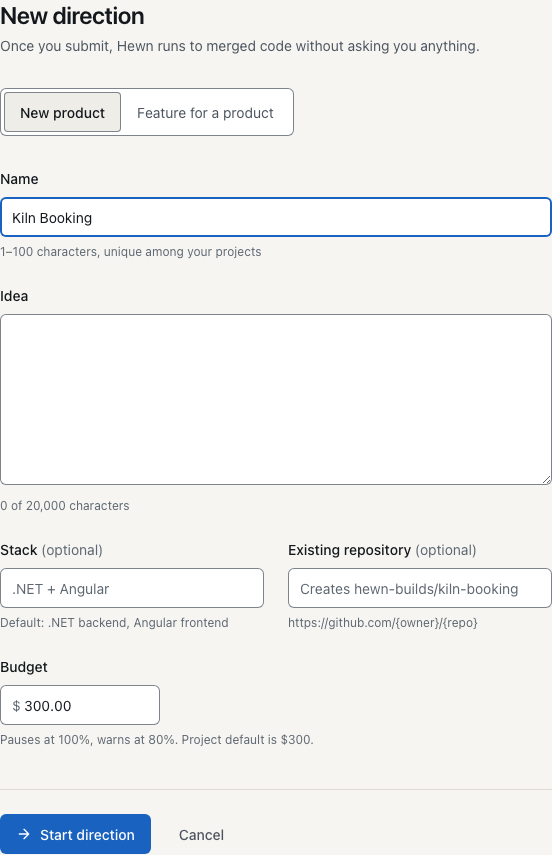
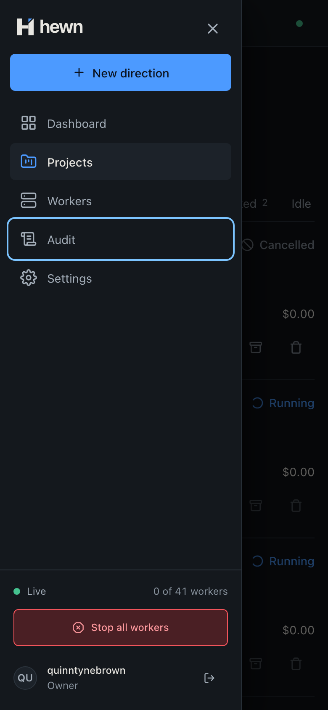
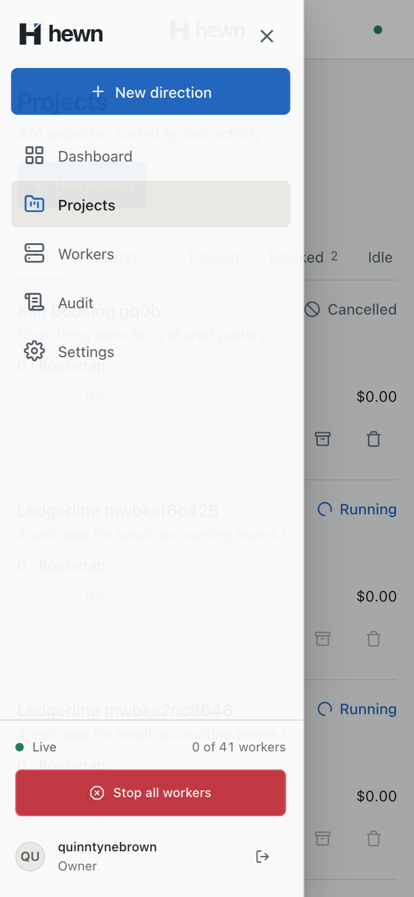
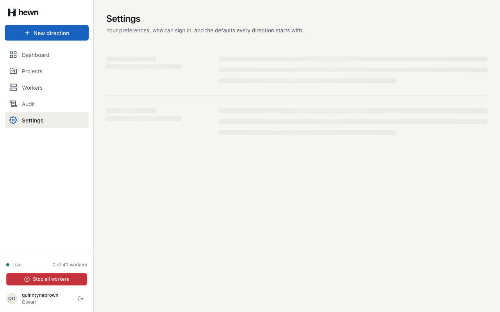

Every page by keyboard, stage changes read aloud, and no motion when it isn't wanted.


Projects 26 rules passed 0 violations Project, cancelled 30 rules passed 0 violations /projects loading 23 rules passed 0 violations /projects failed 22 rules passed 0 violations /projects/…/backlog loading 25 rules passed 0 violations /projects/…/backlog failed 25 rules passed 0 violations /audit loading 26 rules passed 0 violations /audit failed 24 rules passed 0 violations /settings loading 22 rules passed 0 violations /settings failed 27 rules passed 0 violations

if (!slot || now - slot.at >= ANNOUNCE_EVERY_MS) {
if (slot?.timer) clearTimeout(slot.timer);
this.slots.set(projectId, { at: now, pending: null, timer: null });
this.text.set(message);
return;
}
slot.pending = message;
slot.timer ??= setTimeout(
() => {
slot.timer = null;
if (slot.pending === null) return;
slot.at = Date.now();
this.text.set(slot.pending);
slot.pending = null;
},
slot.at + ANNOUNCE_EVERY_MS - now,
<div class="visually-hidden" role="status" aria-live="polite" data-testid="status-announcer">
{{ announcer.message() }}
</div>
const before = this.all()?.find((p) => p.id === row.id); if (before && stageChanged(before, row)) announcer.announce(row.id, stageAnnouncement(row)); this.all.update((rows) => upsertRow(rows ?? [], row));

const announcer = new StatusAnnouncer();
announcer.announce('a', 'Stage 1, Idea, Running');
vi.advanceTimersByTime(1_000);
announcer.announce('a', 'Stage 1, Idea, Complete');
announcer.announce('a', 'Stage 2, Designs, Running');
expect(announcer.message()).toBe('Stage 1, Idea, Running');
vi.advanceTimersByTime(ANNOUNCE_EVERY_MS - 1_001);
expect(announcer.message()).toBe('Stage 1, Idea, Running');
vi.advanceTimersByTime(1);
expect(announcer.message()).toBe('Stage 2, Designs, Running');
for (const name of names) {
const said = await of(name);
for (let i = 1; i < said.length; i++) {
expect(said[i]!.at - said[i - 1]!.at, `${name}'s announcements are 5 s apart`).toBeGreaterThanOrEqual(4_900);
}
expect(said.at(-1)!.text).toMatch(new RegExp(`^${name}, stage \\d+, [A-Za-z ]+, [A-Za-z]+$`));
}
async walk(limit = 5000): Promise<TabWalk> {
await this.page.evaluate(() => (document.activeElement as HTMLElement | null)?.blur());
const stops: TabStop[] = [];
for (let i = 0; i < limit; i++) {
await this.page.keyboard.press('Tab');
const stop = await this.page.evaluate(describeFocus, true);
if (stop.seen === 'start') return { stops, wrapped: true };
if (stop.seen === 'again') return { stops, wrapped: false };
stops.push({ name: stop.name, ring: stop.ring, visible: stop.visible });
}
return { stops, wrapped: false };
}
